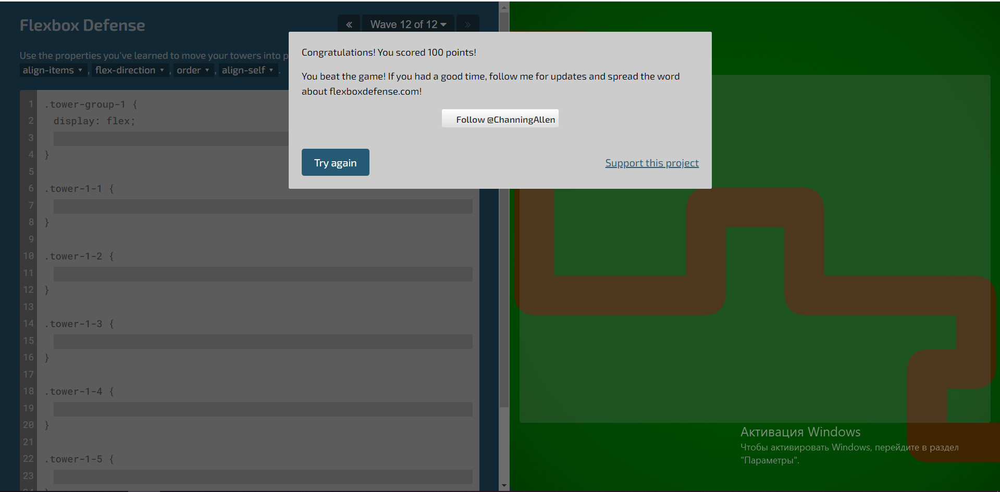

Опис враження ігр. Завдання №3

Особисто мені ця гра сподобалась найбільше. Має зрозумілі правила. Гарний дизайн та зручне використання. Гра складається з 24 рівнів

Гра має не зрозумілі правила, більш складна по складності, як на мене, ніж гра "Flexbox Froggy". Звичайний дизайн. Гра складається з 32 рівнів
Займає друге місце в моєму рейтингу із перелічених ігр. Також має цікавий дизайн, але не так зрозумілі правила як у "Flexbox Froggy". Гра складається з 12 рівнів